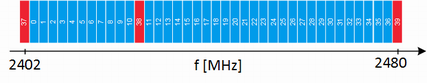

LE: Channels
The R&S CMW provides you with the ability to generate signals in accordance with the Low Energy (LE) specification for Bluetooth wireless technology. Bluetooth LE provides data transfer from low-power devices running on the smallest of batteries to a larger device, such as a PC, a mobile phone, or a PDA. For the first time, a Bluetooth connection to a wristwatch, or a heart rate sensor, or a data transfer from a digital camera, is possible. The generated packets do not support audio content.
A time division duplex (TDD) scheme for duplex transmission is defined. The frequency band defined for Bluetooth devices is the unlicensed 2.4 GHz "Industrial, Scientific and Medical" (ISM) frequency band.

RF channel index
red = advertising channels (only primary supported)
blue = data channels